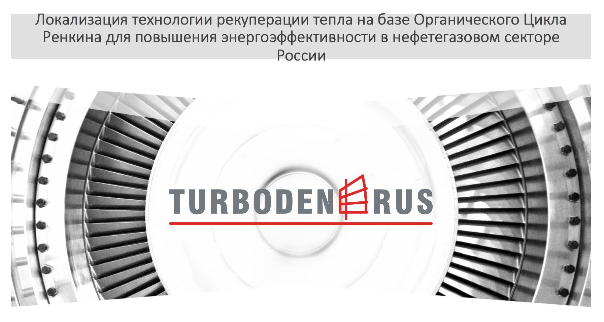

YFNY | презентация молодежных проектов
Локализация ОЦР для нефтегазового сектора РФ.
#turbodenrus #climatechange
Установки Turboden RUS - это современное оборудование генерирующее тепло и электроэнергию из возобновляемых источников энергии и путем регенерации тепла производственных процессов. В соответствии с прогнозом Международного энергетического агентства, мировой спрос на природный газ будет расти на 2% в год в течение следующих 5 лет. В то же время, на конференции по климату в Париже (COP21), участники 195 стран согласовали окончательный глобальный договор по сокращению выбросов, в рамках метода снижения выбросов парниковых газов. Таким образом, в ближайшем будущем, нефтегазовая промышленность обязана будет играть ключевую роль в этой области. Более устойчивое и ответственное использование энергии в нефтегазовых процессах представляет собой оперативную и эффективную возможность устранения проблемы. Пути повышения энергетической эффективности различны; одной из наиболее перспективных возможностей это использование технологии органического цикла Ренкина (ОЦР), которая позволяет преобразовывать остаточное низкопотенциальное тепло технологических процессов в полезную мощность. Россия может сыграть ключевую роль в области развития данной технологии! За счет технологии утилизации тепла на основе органического цикла Ренкина, на базе 30-50% компрессорных станций Единой системы газоснабжения России, амбициозная концепция в области энергосбережения и повышения энергетической эффективности, может быть достигнута. Это позволит сэкономить 11 млрд нм3 природного газа в год, снизить выбросы CO2 до 21 млн. тонн в год и привести к дополнительной экономической выгоде за счет экономии и снижения затрат на электроэнергию. Учитывая огромный потенциал повышения энергоэффективности, Турбоден РУС предлагает конкретные решения и технологии, связанные с проектами утилизации тепла. Данные проекты могут быть локализованы на территории России в целях соблюдения политики импортозамещения.
Более 330 электростанций на ОЦР в мире
Произвести полную локализацию производства в РФ
Набор сотрудников с Инженерным Образованием и знанием Английского языка
Привлечение молодых специалистов для прохождения практики и участия в исследовательских проектах компании.
Тел.: (305)799-2661Эл. почта: aberezin@turbodenrus.com